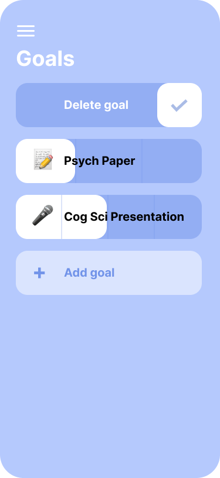
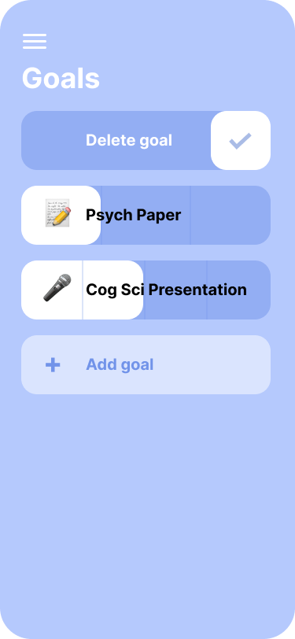

Project Type: App design
Tools Used: Figma
Timeline: 1 week
Checkt is a comprehensive to-do/calendar application for mobile devices. I designed this app for users to keep track of goals, to-do lists, and events seamlessly on one platform. While numerous apps that focus on goals and calendars exist, many focus solely on one or the other. Checkt integrates all these functionalities into one cohesive app.
By consolidating both daily and future events with short and long-term goals, this app simplifies the task input and viewing experience. The integration offers a holistic view of personal timelines making planning and organizing efficient. With Checkt, users can experience a streamlined approach to task management and goal organization, making everything from daily responsibilities to long-term aspirations easily accessible in a single app.
To better understand the potential users of the app, I conducted two user interviews from college students (ages 18-24) to discover motivations behind using personal organization apps. I gained insight on what organization methods, apps, and app features are used.


I analyzed several competitors of Checkt. The three apps I analyzed (Google Calendar, Reminders, and Structured) are all popular apps for personal organization. These apps specialize in specific features such as calendars, checklists, and to-dos.


I narrowed down three features for my app to focus on: goals, a calendar, and a to-do list. This was my first design.

 

The good:
To improve:
To make a more consistent design throughout the app, I created a style guide.